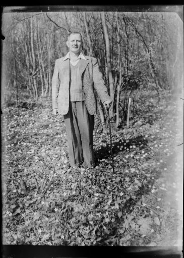
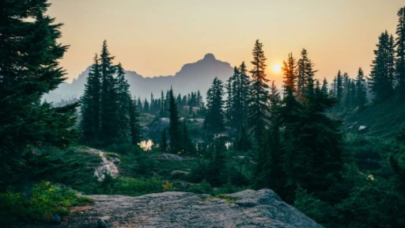

Our Story
 Our founder, Henry Forest, was a lover of the outdoors from a young age. As a child he would often venture off into the woods behind his house and as he grew older, would spend hours exploring local trails and hiking mountains. He had a deep appreciation for the natural world and was a lover of adventure.
As he grew into a teenager and eventually a young adult, Henry became accustomed to taking on longer and more dangerous journeys. He often had to fend for himself. He and his fellow adventures often had to make do with drinking from rivers, sleeping in shoddy tents with no heat and traveling on foot or with vehicles ill-suited to rough terrain.
These experiences gave Henry an idea. What if there was a company that could provide tools and equipment for the adventurers of the world? A company that could, at the same time, share his love of the outdoors to a wider population. And so, Green Mountain Outfitters was born.
Although our founder has unfortunately passed away, Henry's dream of fostering the spirit of adventure and the community which pursues it lives on. From our humble roots as a one-man enterprise, Green Mountain has grown to become one of the largest companies in its field and we continue to pursue Henry's dream every day. 